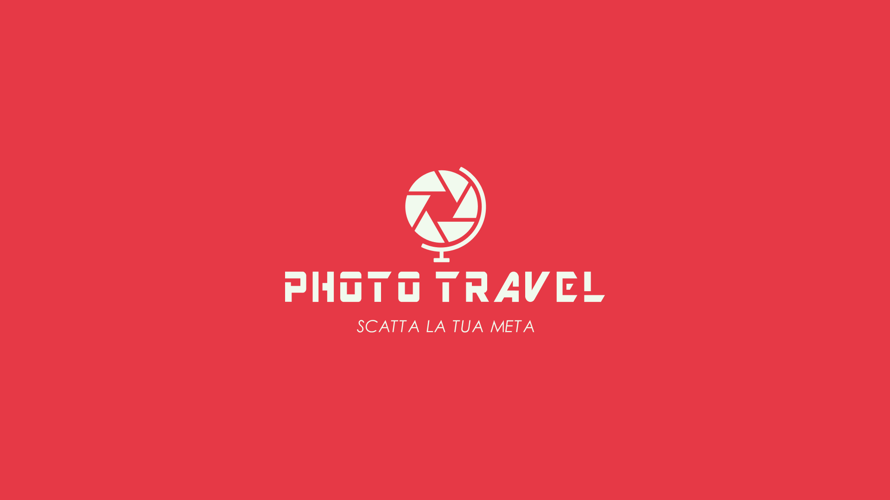
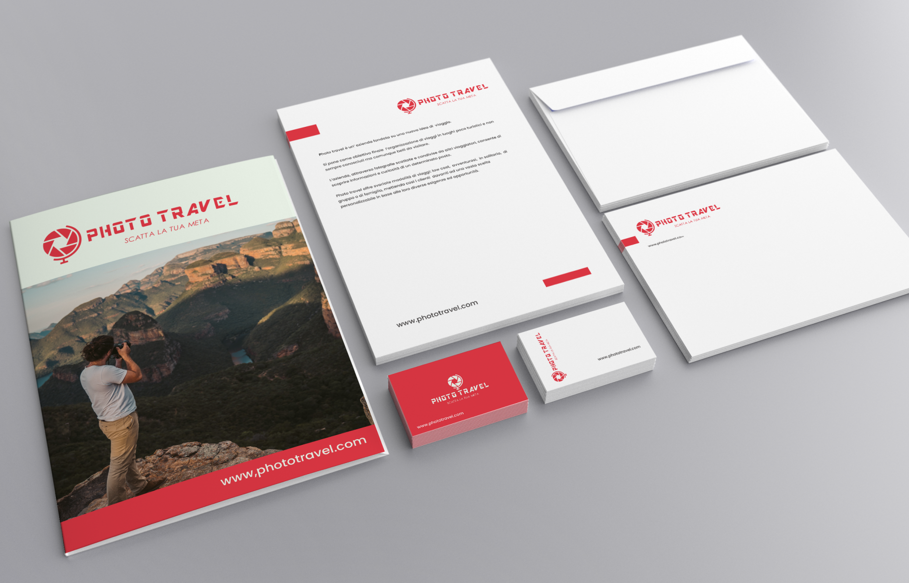
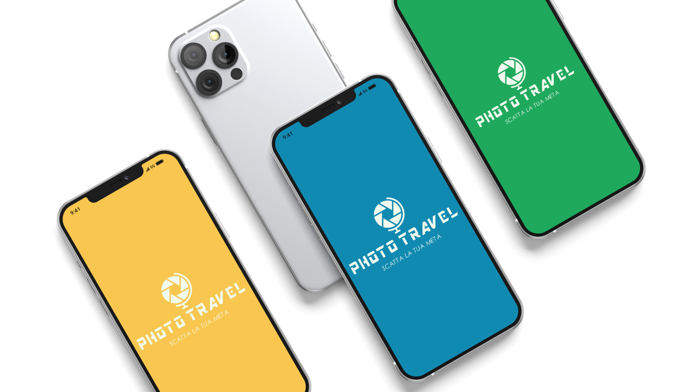
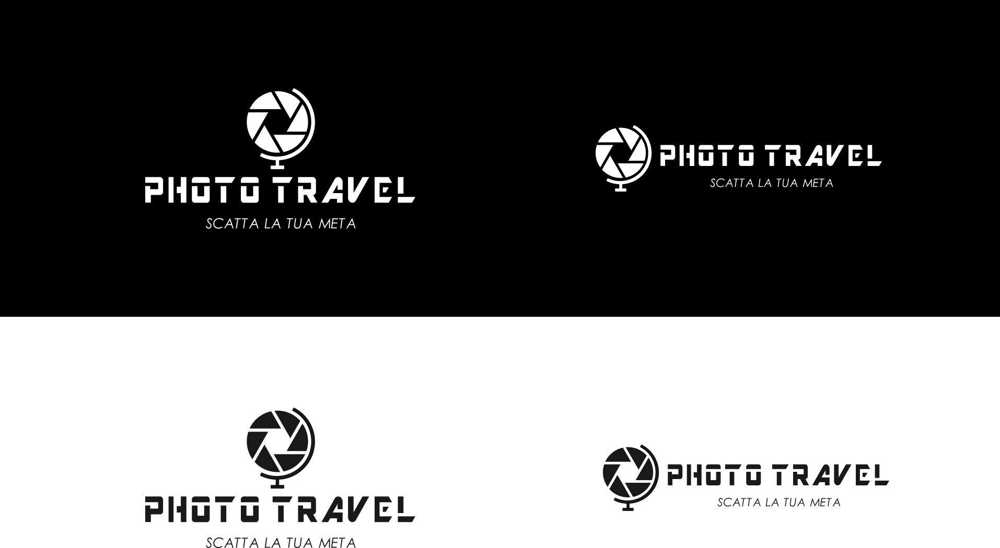
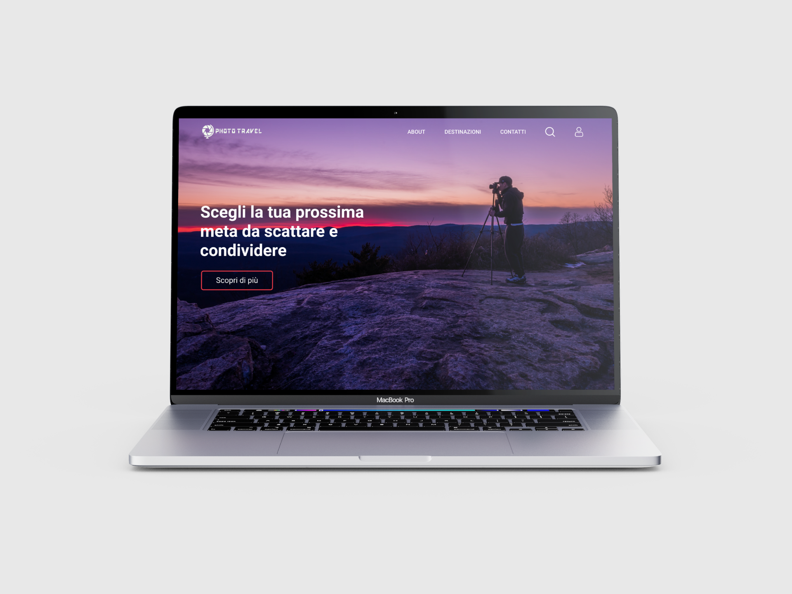
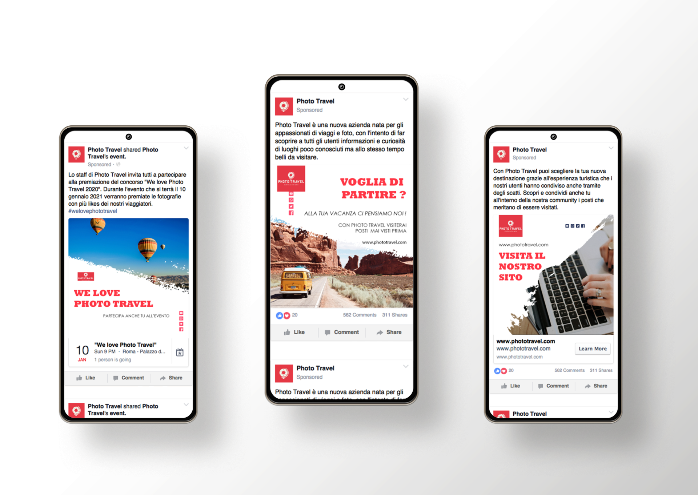
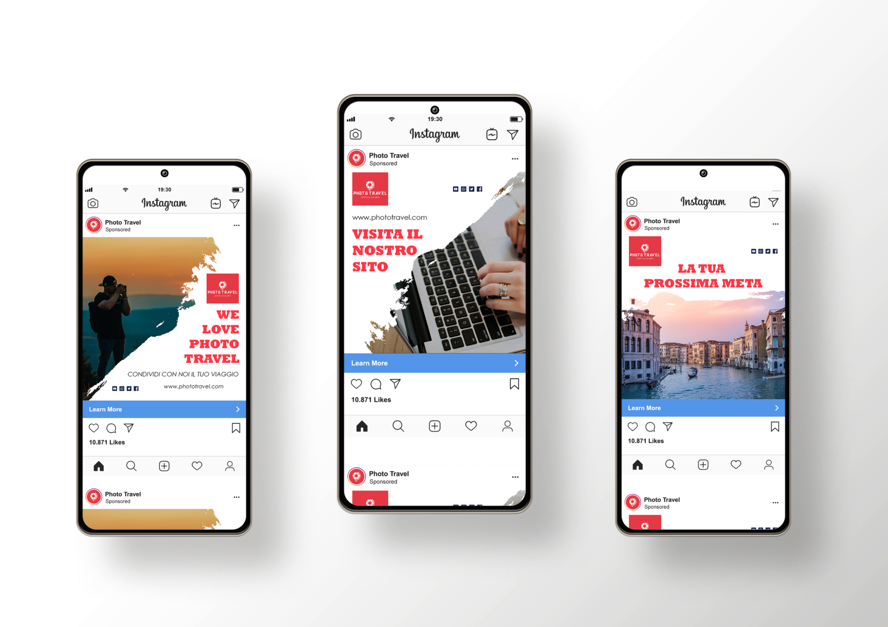

Photo travel è un’ azienda fondata su una nuova idea di viaggio. Si pone come obiettivo finale l’organizzazione di viaggi in luoghi poco turistici e non sempre conosciuti ma comunque belli da visitare. L’azienda, attraverso fotografie scattate e condivise da altri viaggiatori, consente di scoprire informazioni e curiosità di un determinato posto. Photo travel offre svariate modalità di viaggi: low cost, avventurosi, in solitaria, di gruppo o di famiglia, mettendo così i clienti davanti ad una vasta scelta personalizzabile in base alle loro diverse esigenze ed opportunità.
Il logo è la fusione tra un obiettivo di una fotocamera ed un mappamondo. Tramite questi due elementi, si vuole evidenziare le passioni per la fotografia e per il viaggio. Il logotipo è costituito dalle parole photo e travel.





